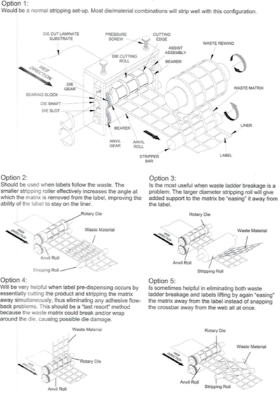

Desafortunadamente, no todos los troqueles corren sin problemas. Cada operador de prensa tiene sus tácticas para lograr que un troquel corra como el desea. Para hacer esto, todos necesitan una caja de herramientas de troquel. Las herramientas se pueden usar solas o en conjunto con otras para obtener la vida máxima y las velocidades de funcionamiento necesarias para el troquel.
Back to Resources
Componentes de la caja de herramientas
Micrómetro 0-1" o calibre de papel
Esto se usa para medir el respaldo o el grosor del sustrato del material que esté cortando. Le ayuda a asegurarse de que el material que está cortando sea el indicado para el troquel que fue fabricado.
Esponja
Dependiendo en el área de la superficie, la profundidad de corte y la agresividad del material, a veces la única forma de remover el esqueleto de una cavidad es manteniéndola presionada mientras se retira el esqueleto. Esto se logra si empacan las cavidades con esponja y levantan el esqueleto directamente del troquel. Necesitará esponja de aproximadamente .0625 "de espesor para los troqueles sólidos y de .005" de espesor para troqueles flexibles.
Yunques escalonados
Un conjunto de yunques escalonados puede ayudarlo a obtener una profundidad de corte más profundos o más ligero al cortar un material en particular. También se pueden usar para extender la vida útil del troquel en herramientas que se hayan desgastado. Sugerimos un conjunto de yunques donde el área de las pistas sea .0005” más baja y .0005” más alta que el área del yunque que se utiliza para cortar.
Lupa de 10x
Esta se puede usar para inspeccionar cuchillas dañadas en un troquel. El daño en las cuchillas es la razón principal por la cual las herramientas vuelven para reafilarse prematuramente.
Tabla para remover el esqueleto
El uso de una tabla, como la que se muestra a continuación, se debe encontrar localizada en cada prensa para recordarle al operador que debe intentar diferentes métodos para remuevo el esqueleto correctamente de la herramienta.
La implementación de una caja de herramientas de troquelado lo ayudará a lograr los mejores resultados y estará preparado para solucionar los problemas cuando ocurran. Contáctenos para más información.

¿Preguntas sobre el corte?
Si tiene preguntas adicionales o pensamientos acerca de cómo la fuerza afecta su aplicación, le invitamos a contactar el equipo técnico de Wilson. Haga clic aquí para contactar a Wilson.